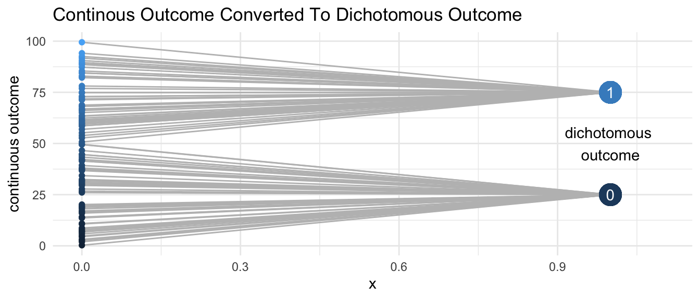
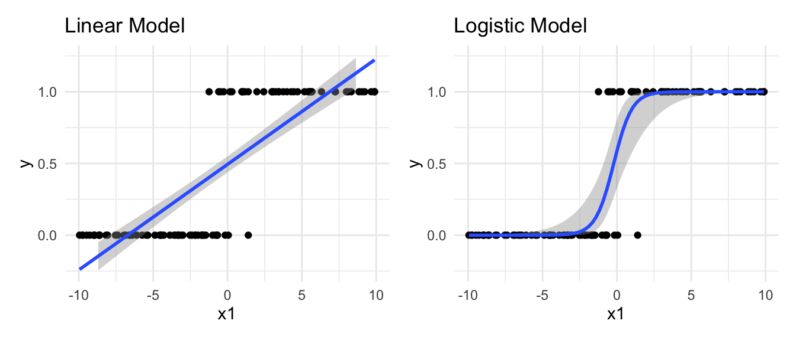

Logistic Regression
New forms of the multilevel model are required when we have outcomes that are not continuous. Let us imagine, for example, that we have a situation in which our continuous outcome is now categorized into two groups. For example, we might imagine that there is some sort of diagnostic cutoff. scores greater than this cutoff are assigned to one group (1), while scores lower than the cutoff are assigned to another group (0).
No doubt this scenario is more likely when we consider an undesirable outcome like depression or anxiety. Higher levels of depression or anxiety might be greater than some diagnostic cutoff, meriting a score of 1, meets criteria for a diagnosis, while scores lower than that diagnostic cutoff might receive a score of 0, does not meet diagnostic criteria. However, in keeping with our characterization of the outcome in the simulated data employed in this book as desirable or beneficial, we may also imagine a situation in which 1 is assigned to sufficiently high levels of some desirable or beneficial outcome that exceed some threshold value, while scores below that value are assigned to be 0.
Pedagogically, this new categorical outcome satisfies our need to have a dichotomous outcome to explain a new group of models–logistic regression models–that are suitable for such outcomes. It is sometimes considered to be a statistical rule of thumb that we should never dichotomize a continuous outcome. Certainly, it is true that when we dichotomize an outcome we lose a certain amount of information in the data about the variation, heterogeneity, or diversity in the outcome. Such a loss of information may reduce our ability to obtain statistically significant results. At the same time, certain numerical cutoffs may have important substantive meanings, clinical meanings, or policy meanings. For example I have already considered higher levels of anxiety or depression that may exceed clinically important cutoffs implying a diagnosis 1 versus 0 of depression or anxiety. Levels of income below a certain threshold–whether a country specific threshold or some globally relevant threshold–are considered to be in poverty1, while individuals above that income threshold are considered to be not in poverty (1 versus 0). In the example considered in detail in this chapter, families with a child having a beneficial outcome at a certain level might be considered to have a child satisfying a certain minimal level of psychological well-being.
In contrast, some outcomes are naturally dichotomous and do not arise from dichotomizing a continuous variable: born versus not born; married or partnered versus single; alive versus dead; entered a program; exited a program; conflict or protest occurred versus conflict or protest did not occur.
I now consider two possible strategies from modeling dichotomous outcomes: the linear multilevel model that we have been considering so far in this book; and a logistic regression model designed specifically for dichotomous outcomes. The easiest way to consider and compare these models is through presentation.

In each model, the equivalent pattern of dots represents some dichotomous outcome (e.g. birth, death, satisfies diagnostic criterion) that becomes more likely as some independent variable increases in value. At higher levels of the independent variable, the outcome is almost exclusively 1. at lower levels of the independent variable, the outcome is almost exclusively 0. One could try to estimate this dichotomous outcome with a straight line, or linear model, as depicted in the left hand panel of figure XXX. This might be roughly plausible, and this procedure is termed a linear probability model which I will not discuss in more detail here. Suffice it to say that several problems emerge for a linear probability model: the model predicts values of the outcome greater than one and less than 0; standard errors of the model are clearly not homoscedastic but change in value (heteroscedasticity); and lastly a linear model estimates a constant association between changes in x when this is not appropriate.
[graph of marginal changes for each model]
[Probability vs. odds table]
| total events | event occurred | event did not occur | risk | odds |
|---|---|---|---|---|
| 100 | 10 | 90 | 0.1 | 0.11 |
| 100 | 20 | 80 | 0.2 | 0.25 |
| 100 | 30 | 70 | 0.3 | 0.43 |
| 100 | 40 | 60 | 0.4 | 0.67 |
| 100 | 50 | 50 | 0.5 | 1 |
| 100 | 60 | 40 | 0.6 | 1.5 |
| 100 | 70 | 30 | 0.7 | 2.33 |
| 100 | 80 | 20 | 0.8 | 4 |
| 100 | 90 | 10 | 0.9 | 9 |
| 100 | 100 | 0 | 1 | Inf |
Footnotes
For example the World Bank [@WorldBankPovertyLine] considers $2.15 per person per day to be a globally relevant indicator of extreme poverty.↩︎